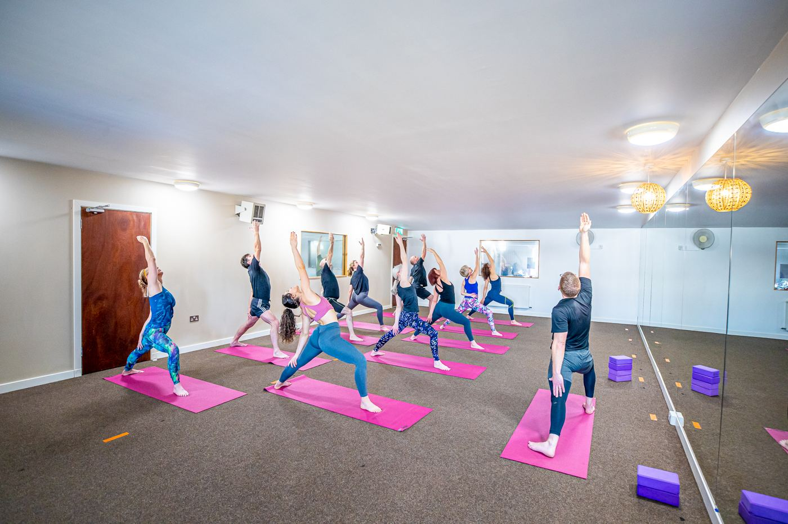
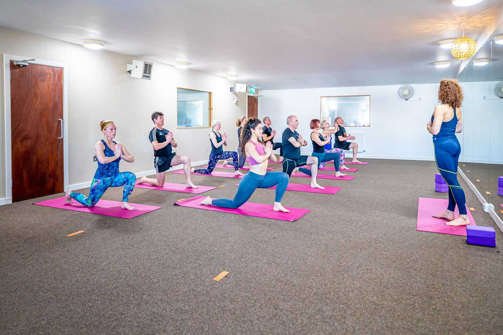
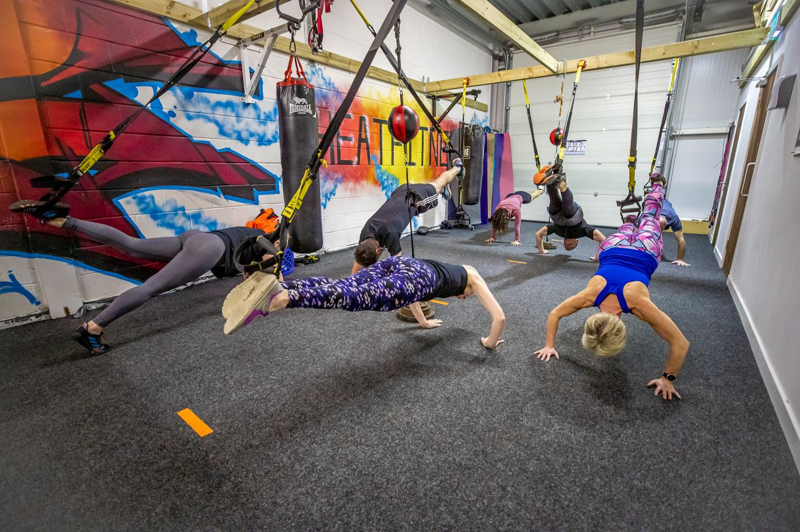

Yin 60
UnheatedClose your day with an hour of deep stretching. A slow-paced style of yoga, mostly on the floor with plenty of props, that encourages relaxation and leaves you feeling calmer.
From 40°C Hot 26 & 2 to unheated Yin, every class shows its temperature, so you can choose what suits you.
We're Stirling's only hot yoga studio, but plenty of our classes aren't heated at all. Most people start somewhere cool, and every class tells you its temperature before you book.

Close your day with an hour of deep stretching. A slow-paced style of yoga, mostly on the floor with plenty of props, that encourages relaxation and leaves you feeling calmer.
A deeply restorative 75 minutes, using gentle somatic movements and yin postures to calm, stretch and unwind both the body and the nervous system.
An hour of power based on traditional Ashtanga yoga. A fast-moving class with sun salutations, a warrior series and balances, building strength, flexibility and balance.
Lightly weighted mat Pilates with some yoga flow, though it's more Pilates than yoga. Plenty of core work in a warm room.

A beginner-level yoga sequence in the hot room, with quiet music in the background. You explore the postures with help from the teacher if you need it, there are props and blocks, and you never do anything you don't want to do.
The original hot yoga sequence of 26 postures and two breathing exercises. Choose the 60-minute express or the 90-minute original, and work at your own level.
Sixty minutes of beginner-level yoga postures in the hot room. A friendly way to try the heat.

The gym is downstairs, and it's small and friendly. Every newcomer gets a proper walk-through, so nobody is left wondering how the kit works.
A full-body workout using TRX straps and your own body weight, with your core working throughout. Perfect for beginners, with options for anyone who's been on the straps a while.
A 45-minute strength circuit for your whole body. You keep the same moves for four weeks so you can track your progress and get stronger, with more reps or heavier weights, then the programme changes each month.
A small women's-only strength group for women over 40, through perimenopause and menopause. More weights than cardio, because once you hit that beautiful number, building strength is the key. It's small group personal training, booked a month at a time, so message Helen to join.
One-to-one with Helen in the gym or on the mat. See one-to-one sessions.
Alongside the regular timetable, we now run small six-week groups for people who'd like a bit more support to get started. Each one has two sessions a week, one downstairs and one upstairs. Each group runs in six-week cycles, and the next starts the week of 9 November.
Not sleeping? Not yourself?
Gentle strength in the gym and slow, unheated yoga upstairs, built around energy that changes from week to week. When you arrive, tell Helen how you feel today: green for full of beans, amber for so-so, red for running on empty. She'll shape the session to match.
Strong enough for the next thirty years.
Cool, unhurried strength for muscle and bones in the gym on Wednesday evenings, plus gentle yoga for balance in the warm room on Saturday mornings, with a teacher who gets it.
Your back called. It would like a word.
Lunchtime strength basics downstairs and a deep stretch in the warm room upstairs. No chanting, no headstands, and time to shower before you head back to work.
Calm, and the same every week.
The same simple routine at the same times every week, so nothing comes as a surprise. Low lights in the studio, low music, nobody watching, and you can leave whenever you need to.
Daytime, no heat, and a cuppa after.
Strength and balance in the gym with the wall to hold on to, and supported yoga upstairs. Tea and a chat afterwards is part of the class.
Strong through the change.
Our small women's-only strength group is already up and running, and some of the women have been coming for over two years. More weights than cardio, for women through perimenopause and menopause. Booked a month at a time, and there's usually space.
Message Helen to join